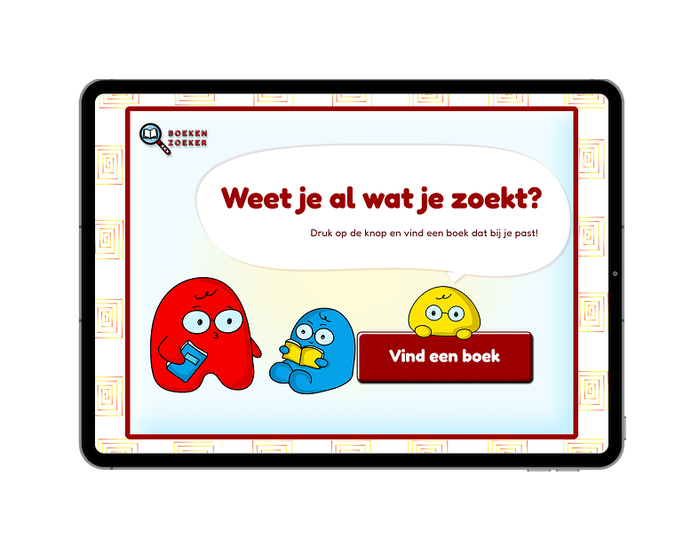
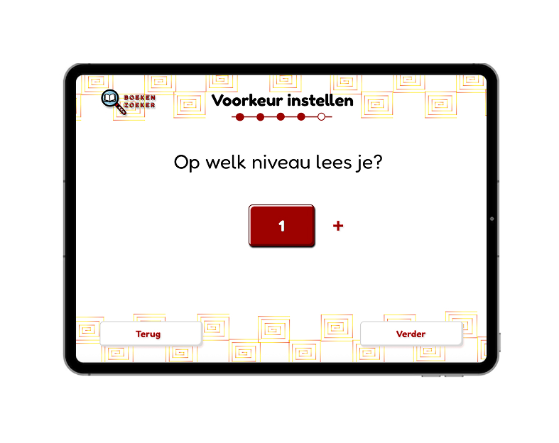
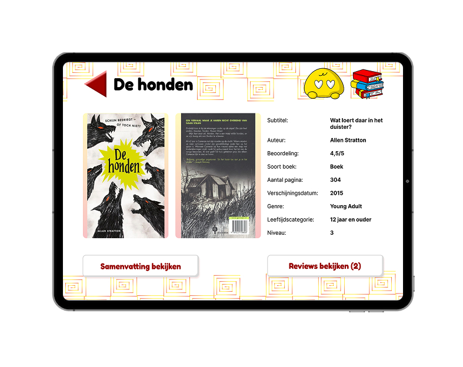
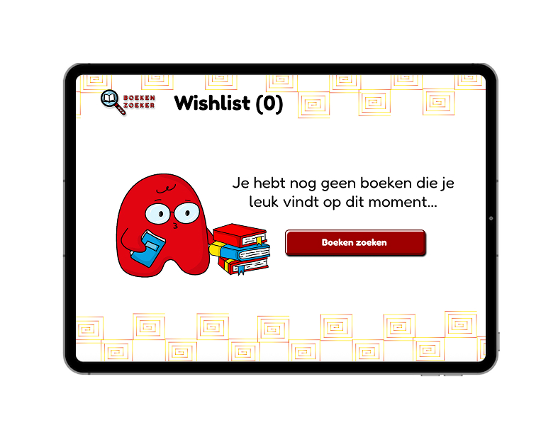
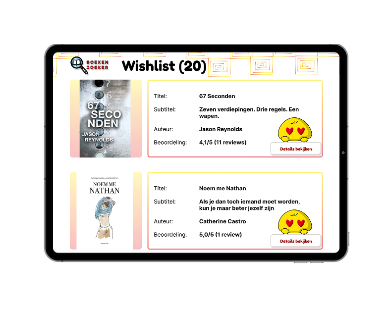

Boekenzoeker - a bookfinder
Visual Interface Design (Figma)
View prototype ↗About this project
For the Visual Interface Design course, I designed an iPad kiosk interface called Boekenzoeker. The goal of the assignment was to help primary school students quickly find interesting books in the school library.
The interface lets students select a few preferences, such as genre and type of story, and then generates a list of book suggestions that match their interests. From there, they can add titles to a personal wishlist and email that list to themselves, so they can easily find the books in the physical shelves.
I worked within the existing brand style of the City of Amsterdam, but created a substyle for younger students: more playful typography, clearer icons and a friendly colour palette. At the same time, I designed functional screen layouts that focused on clarity, hierarchy and ease of use on a single iPad screen.
The design process followed a structured step-by-step approach, where I developed the visual style and the screen flows in parallel. The final result is a focused, tablet-only interface that guides students from starting the kiosk to walking into the library with a curated list of books.
Preview



